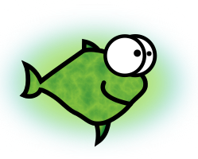

Queen Padmé Tales: The Fifth Sith
About this screenplay
Objective
[ An illustrated screenplay crossing Star Wars Ep. I, the Selinaverse (itself crossing Star Trek TNG/DS9, Buffy, Judaism, Israel, Objectivism, etc.) the real world online/offline life in 2010s/2020s, and Spaceballs.
This screenplay is not written in the Hollywood blessed format because good hackers (= resourceful and rule bending heroes) who include the talented actors and actresses in this film, can withstand reading a raw and non-CSS-styled XHTML5 file. That - and hackers like me do not have the time to massage a screenplay into Hollywood's whimsical format only to be rejected, rinse and repeat. ]
Licence
[ Emblem: 
This text is Copyright by Shlomi Fish , 2021 and is made available under the Creative Commons Attribution 4.0 Unported Licence (CC-by) (or at your option - any later version). ]
Dedication
[ The Dedication: ]
Main Scene
Anakin quitting jedi school
Criticising Anakin
[ Padmé is sitting in her office in the morning using a desktop Linux system. A male cat is lying above the keyboard. ]
[ Padmé pauses. ]
[ The cat steps on the keyboard resulting in keystroke noise.
Padmé sends the E-mail by accident. ]
[ She sends a short apology email saying "Sorry, Ani! I sent the last message by accident. Cat…". She receives a reply. ]
[ She opens a videochat to Katie. ]
[ Padmé gets out of her office to the corridor.
A portal opens and Anakin and Katie step out.
Anakin hugs Padmé . ]
Anakin becoming a sith
Anakin the Jedi
[ Anakin and Padmé enter Darth Vader’s office.
Note: Anakin Skywalker and Darth Vader are two different characters in this screenplay. ]
Yoda
[ Yoda appears on screen. ]
[ Tweet by @Yoda: “The third sith is I. Created the legend of the Sith 2,000 years ago have I. "Master Darth Yoda" call me you can. Or just plain "Yoda"." ]
[ Padmé and Anakin leave the room.
Yoda is seen chuckling, and the two other Siths join him. ]
After the Date
Funny can be sexy
[ Padmé and Anakin returned from their date, and are walking towards Padmé's room. ]
[ They both laugh. ]
[ They think for a moment, and then start kissing passionately .
Cut. ]
Sith in the sheets
[ Caption: "Later that night"
Padmé and Anakin are in Padmé's bedroom. ]
[ before Anakin closes the door. ]
[ Anakin closes the door. Padmé is lying in bed happy. After several seconds she opens her eyes widely. ]
What maketh a sith?
[ Padmé is walking to her office. ]
[ Padmé opens the door to her office. She enters, sits next to the computer, types "what is a sith" ( without the quotes ) into the browser's address bar, and presses Enter. Her vision becomes blurry and she falls asleep. ]
Q about the essence of being a Sith
The morning after
[ Padmé is in her office sleeping with a wide smile on her face. She wakes up, stretches her arms and then sees four spirit friends: Twilight Sparkle, Starlight Glimmer, Rainbow Dash and Discord. ]
[ Showing an antique reel to reel computer not unlike the PDP-11 ]
[ He presses a red button and the computer morphs into a more modern / futuristic one. ]
[ The printer starts printing. Discord takes a page. ]
[ Q of the Selinaverse rings the office's door bell. He is wearing a Star Fleet uniform. ]
[ The spirit friends say "ooh", chuckle, and use their smartphones to tweet. ]
Q and Discord Present about The State of the Selinaverse
[ TODO: add live excerpts from the talk by Q of the Selinaverse and his spiritual cousin Discord (who was forked from the one at the end of the mlpfim 7th season). ]
Padme multiplies-dash-lang-dot-org
[ Padmé enters. ]
[ Anakin thumbs up. ]
[ Padmé's eyes become ebbing dark, and the four Spirit friends appear by Padmé's sides; Discord snaps his fingers, and intimidating guns not unlike the ones in The Mask materialise in the hands of the Spirit friends. ]
[ The first four siths are startled, and scream.
The four guns fire signs saying "gotcha!". ]
[ The first four siths are relieved. ]
[ Gangnam Style/etc. remix starts playing and the characters from the Queen Padmé Tales series start dancing or swaying to it.
The End. ]